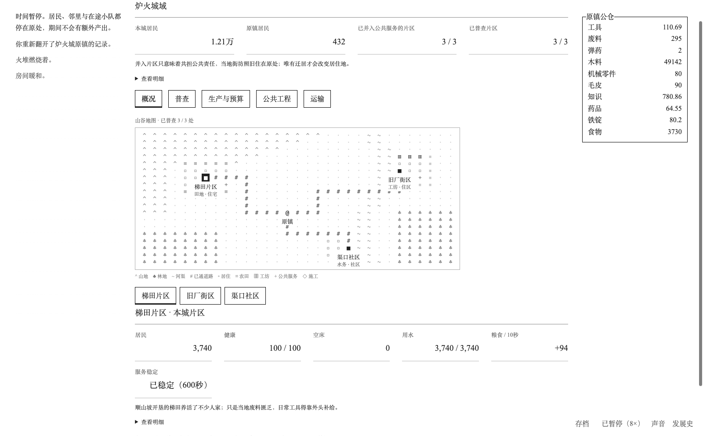
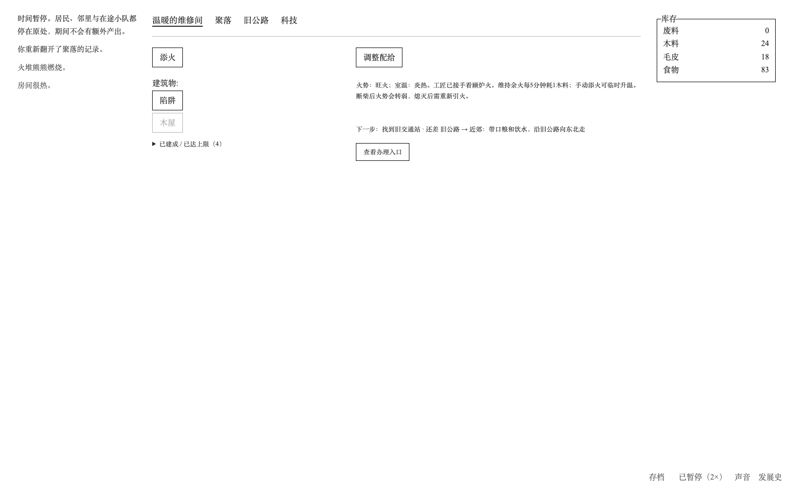
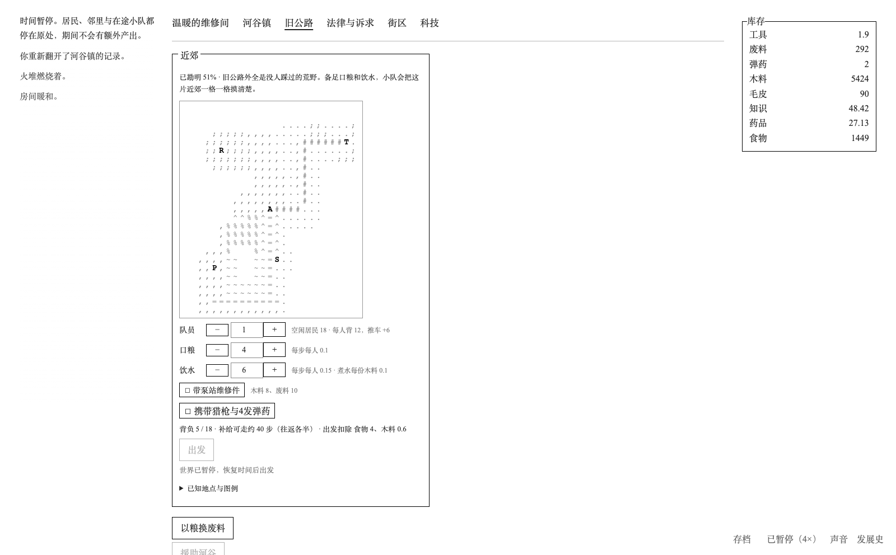
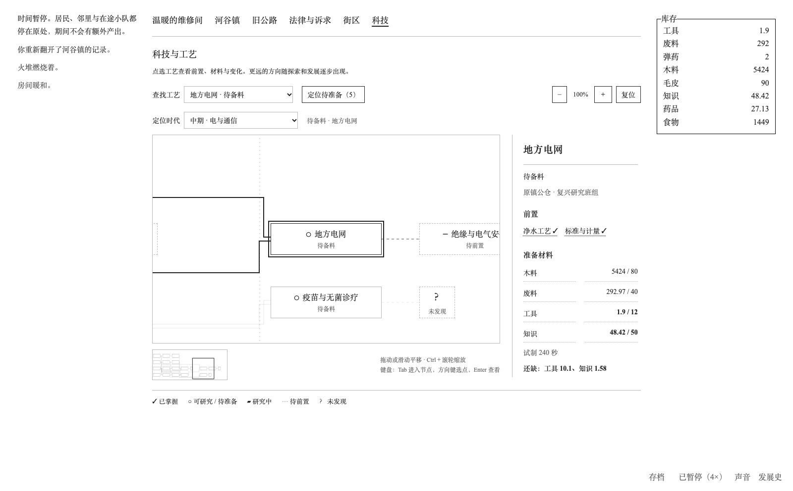
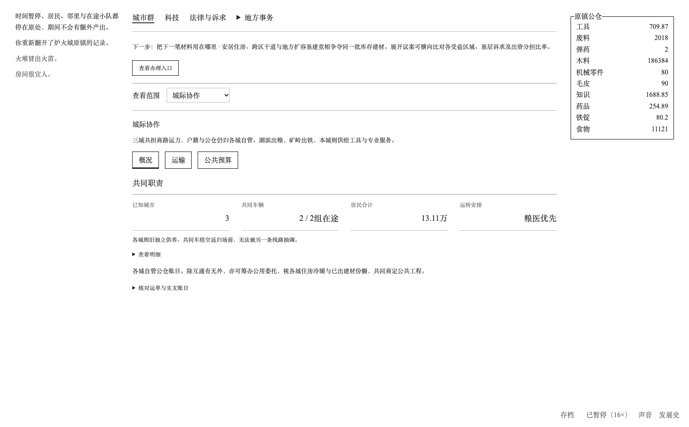
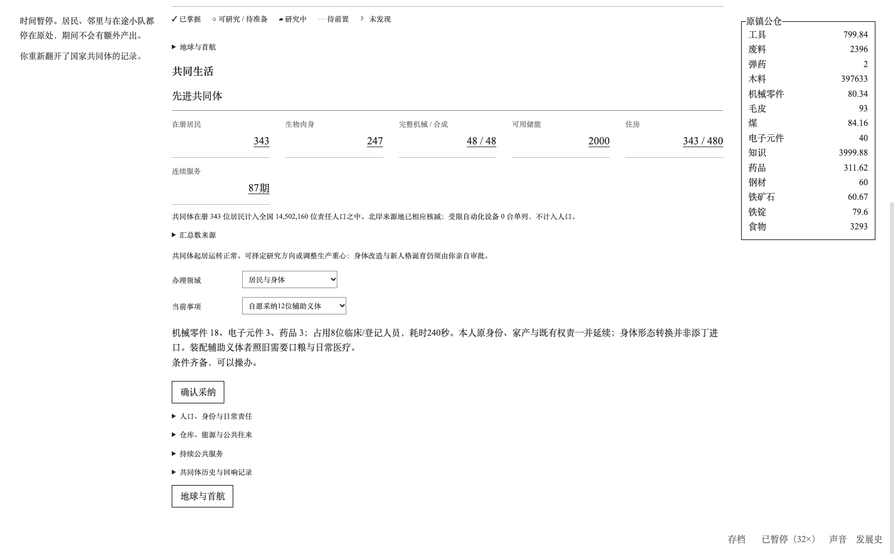

作者审阅草稿。此文件不会提交公开。
从一间冰冷的维修间出发，带领数代人重建城市、联结世界，再次走向星空。一款逐步展开的文字模拟策略游戏。






舱盖被推开时，外面的世界已经变了。
没有电，只有墙角的几根干柴。先点起一团火，再想办法让明天还有饭吃。
后来，有人循着火光走来。屋里多了几双鞋，门外有了第一条路。你要决定谁去拾荒、谁留守，如何分配有限的口粮，又该不该接纳下一个敲门的人。
这间屋子会长成村镇，村镇会连成城市。旧公路的尽头还有幸存者、避难所、失控的机器，以及没有写完的战前记录。当不同的城市重新取得联系，摆在桌上的也不再只是柴与粮，还有运输、预算、法律、战争与和平。
最初守火的人会老去。你所延续的，是一代代人共同生活的文明。
作品基于 A Dark Room 官方开源代码制作，保留文字、黑白按钮、字符地图与逐步解锁的交互方式，沿用 MPL-2.0 许可与原作者署名。
经营与制度设计参考了《辐射避难所》《冰汽时代》《文明》及《维多利亚》等策略游戏，希望把人口、生产与公共生活中的取舍，放进一间房子开始的故事里。
求生与探索：添火、分配食物、建设工坊，带上补给走进近郊地图。修复设施、调查遗迹，决定带回什么，也决定留下什么。
村镇与城市：可以先发展田地和公共服务，也可以沿回收与工业展开。研究需要投入，生产有真实消耗；住房、技能、岗位和供养会逐步成为需要兼顾的事情。
城市之间：让不同产业的城市互通有无。运力有限，地方有自己的库存与诉求；一次共同建设，也意味着此后的维护、用工和公共负担。
制度与科技：为不断变化的社会制定规则。从电力、通信与现代工业，走到基因技术、机械身体和合成人社会。新的能力会改变生活，也会带来新的权利问题。
重返太空：重新联系各地区，经历冲突、合作与重建，最终准备地球篇的首次航行。这里是本版主线的终点，尚不包含星际战争或星际旅行。
地球篇已贯通求生、村镇、城市、城市群、地区与国家、先进社会、全球联结与首航。
包含公共与工业两条早期发展路线、近郊字符地图、城市用途地图、跨时代科技图谱、八条档案故事线，以及随时代变化的音乐与环境声。
这是一款适合分多次游玩的长流程作品。主线按约12—15小时的体验目标设计，实际时长会随路线、倍率和探索方式变化，目前仍在根据试玩反馈调整节奏。
主要使用鼠标操作，近郊地图也支持方向键。页面会随发展逐步开放，已经交给机构处理的旧事务会收起。
右下角可调整倍率、暂停、声音和存档；发展史可以回看重大选择与旧日档案。建议先用电脑体验，离开前保存，也可导出文件备份。
1.0.0｜地球篇首个社区版本
贯通从生火求生到重返太空的主线，接入公共与工业路线、城市网络和后期社会。
加入前中后期统一科技图谱、城市用途地图和阶段导航，精简重复入口。
整理按钮排版、窄屏阅读与弹窗内部滚动。
导入全游润色文案；文明回顾保留年份与正文，去掉重复的条目标题。
欢迎试玩后告诉我，哪些选择值得停下来想一想，哪些地方仍然像在等进度。如果遇到卡住的页面，也欢迎附上截图或导出的存档。